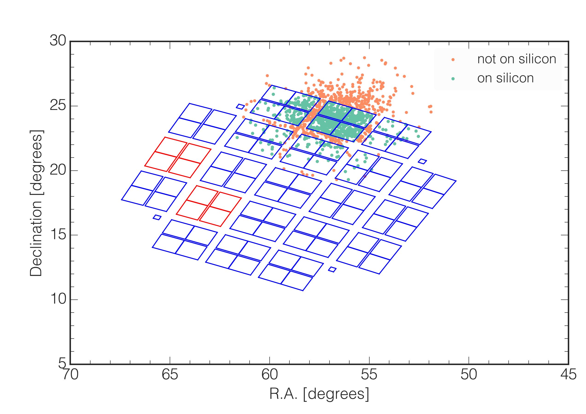
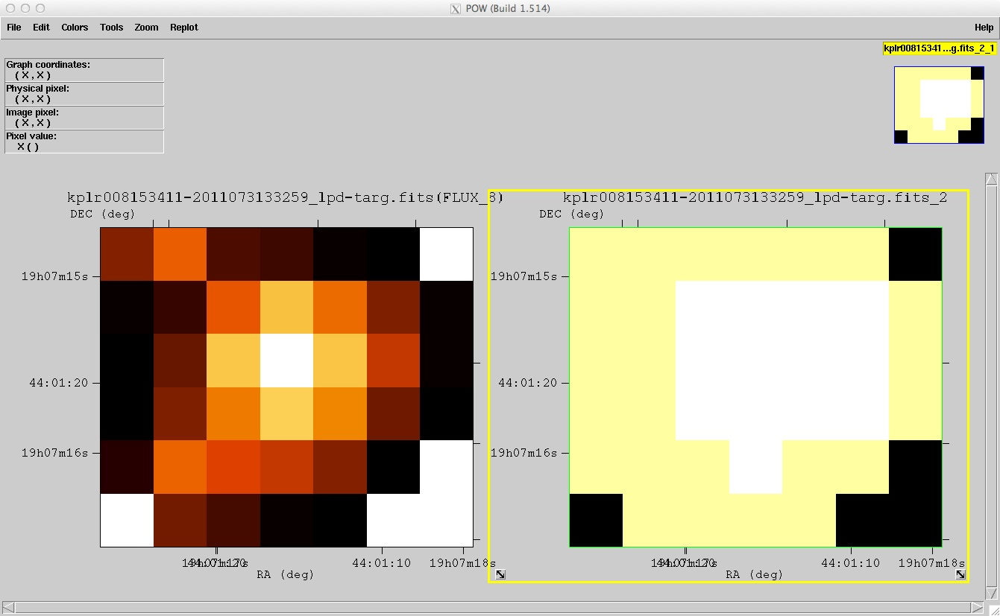
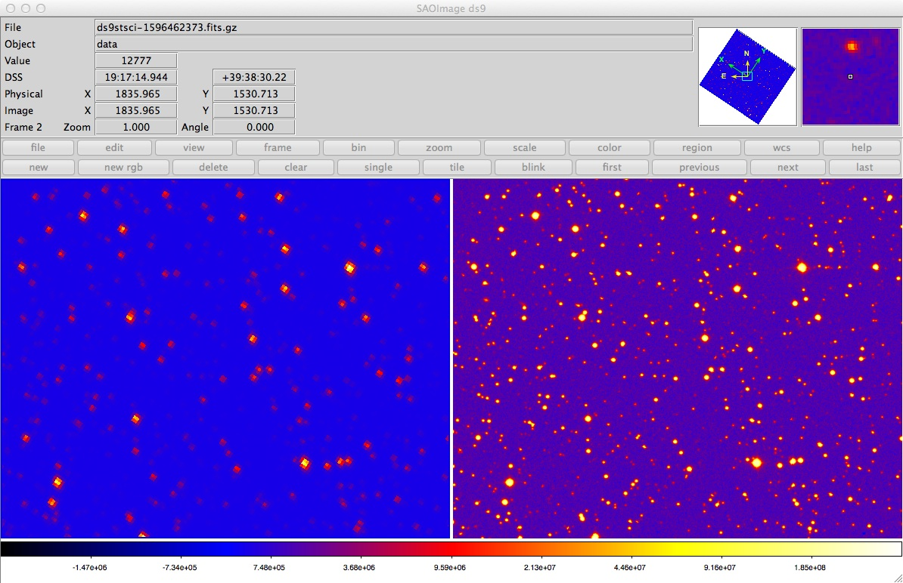

Overview
GO Office tools
Below is a list of software tools created by the Kepler/K2 Guest Observer Office for use in preparing for Kepler and K2 observations and for analyzing the collected data.
| PyKE | A suite of tools to inspect target pixel files and extract detrended lightcurves. | github.com/KeplerGO/PyKE |
| K2fov | Checks whether a celestial coordinate falls within the field of view of a K2 campaign. | github.com/KeplerGO/K2fov |
| K2ephem | Checks whether a moving Solar System body, e.g. an asteroid or comet, falls within the field of view of any K2 campaign. | github.com/KeplerGO/K2ephem |
| K2flix | Converts target pixel files into movies or animated gifs for quick and easy pixel data inspection. | github.com/KeplerGO/k2flix |
| K2mosaic | Combines target pixel files into wide-field images. | github.com/KeplerGO/k2mosaic |
| Kadenza | Converts raw cadence data from the Kepler spacecraft into astronomer-friendly FITS files. | github.com/KeplerGO/kadenza |
Community-contributed tools
In addition, members of the community have made a range of tools available. Below is a non-exhaustive list of community tools, presented in alphabetical order. Please contact us if your software is missing!
| everest | Removes instrumental noise from light curves generated by K2. Associated with a publication by Luger et al. (2016). | github.com/rodluger/everest |
| k2ps | Oxford K2 planet search pipeline that uses k2sc light curves. Associated with a publication by Pope, Parviainen, & Aigrain (2016). | github.com/hpparvi/k2ps |
| k2sc | Removes systematics from K2 data using Gaussian processes. Associated with a publication by Aigrain, Parviainen, & Pope (2016). | github.com/OxES/k2sc |
| ketu | Searches K2 light curves for exoplanets by simultaneously fitting the systematics and transit signals. The results were published in Foreman-Mackey et al. 2015. | github.com/dfm/ketu |
| kplr | A Python interface to the Kepler data. | github.com/dfm/kplr |
| ktransit | A simple exoplanet transit modeling tool in Python. The underlying model is a Fortran implementation of the Mandel & Agol (2002) limb darkened transit model. | github.com/mrtommyb/ktransit |
| lcps | Search for transit-like features in Kepler/K2 data. | lcps.readthedocs.io |
| lctools | A Windows-based set of tools for building, viewing, and analyzing Kepler/K2 lightcurves. | sites.google.com/a/lctools.net/lctools |
| pytransit | Exoplanet transit light curve modelling with Python. Associated with a publication by Parviainen (2015). | github.com/hpparvi/PyTransit |
Observation planning
K2fov
K2fov is a Python package that allows users to check whether a target falls within the field of view of K2.
In particular, the package adds the K2onSilicon and K2findCampaigns tools to the command line, which allow the visibility of targets to be checked during one or all campaigns, respectively.
The code and documentation is hosted on Github and only briefly summarized here.
Installation
Users will need to have a working version of Python 2 or 3 installed. If this requirement is met, K2fov can be installed using pip:
pip install K2fov
If you have a previous version installed, please make sure you upgrade to the latest version using:
pip install K2fov --upgrade
It is important to upgrade frequently to ensure that you are using the most up to date K2 field parameters.
Usage
Installing K2fov will automatically add a command line tool to your path called K2onSilicon, which takes a list of targets as input and writes a new list that indicates the "silicon status" of each target, i.e. whether or not it falls on one of the detectors of the spacecraft's focal plane.
The simplest thing to do is to have a CSV file with columns "RA_degrees, Dec_degrees, Kepmag". Do not use a header. For example, create a file called mytargetlist.csv containing the following rows:
178.19284, 1.01924, 13.2
171.14213, 5.314616, 11.3
The format for the target list is very strict -- you need three columns: ra, dec, and magnitude. Headers or other additional columns will cause an execution failure.
You can then check whether each object in the file falls on silicon by calling K2onSilicon from the command line:
K2onSilicon mytargetlist.csv 1
Where mytargetlist.csv is your CSV file and 1 is the K2 Campaign number.
Running the code will output an updated target list containing the three input columns and an extra column containing either a "0" or "2":
- 0 = Not observable
- 2 = Target is in the K2 field of view and on silicon
The code will also write an image, called targets_fov.png, showing where the targets fall. An example is shown below.

If instead of checking the targets in a single campaign, you want to understand whether a target is visible in any past or future K2 Campaign, you can use a different tool called K2findCampaigns.
For example, to verify whether J2000 coordinate (ra, dec) = (269.5, -28.5) degrees is visible at any point during the K2 mission, type:
$ K2findCampaigns 269.5 -28.5
Success! The target is on silicon during K2 campaigns [9].
You can also check a list of targets using the alternative command line tool called K2findCampaigns-csv.
K2ephem
K2ephem is a Python package that allows to check whether a Solar System body, i.e. a moving asteroid or comet, falls within the field of view of a K2 campaign.
It provides a command-line tool that will automatically grab the ephemeris of an object from NASA's JPL/Horizons service and then check its K2 visibility using K2fov.
Installation
You need to have a working version of Python 2 or 3 installed. If this requirement is met, you can install K2ephem using pip
pip install K2ephem --upgrade
If required, this command will take care of installing the two required dependencies (K2fov and pandas).
Usage
After installation, you can call K2ephem from the command line. For example, to verify whether comet Chiron can be observed by K2, simply type:
K2ephem Chiron
Or you can type K2ephem --help to see the detailed usage instructions:
$ K2ephem --help
usage: K2ephem [-h] [--first campaign] [--last campaign] target
Check if a Solar System object is (or was) observable by NASA's K2 mission.
This command will query JPL/Horizons to find out.
positional arguments:
target Name of the target. Must be known to JPL/Horizons.
optional arguments:
-h, --help show this help message and exit
--first campaign First campaign to check (default: 0)
--last campaign Final campaign to check (default: 18)
Data analysis
PyKE
Documentation website: pyke.keplerscience.org.
PyKE is a suite of python software tools developed to reduce and analyze Kepler and K2 light curves, TPFs, and FFIs. PyKE tools provide the user with flexibility to tune pixel extraction and artifact mitigation for the scientific potential of individual target data. A variety of other tasks are also included. PyKE development takes place on its GitHub repository. We encourage users to participate in the development process by opening issues, pull requests, or sending us an email.
PyKE tasks
A comprehensive list of PyKE tasks is provided here.
| kepbls | Box Least-Square planet transit detection |
| kepclip | Remove unwanted time ranges from Kepler time series data |
| kepconvert | Convert Kepler FITS time series to or from a different file format |
| kepcotrend | Remove systematic trends in photometry using cotrending basis vectors |
| kepdetrend | Detrend systematic features from Simple Aperture Photometry (SAP) data |
| kepdiffim | Difference imaging of pixels within a target mask |
| kepdraw | Interactive plotting of Kepler time series data |
| kepdynamic | Construct a dynamic (time-dependent) power spectrum from Kepler time series data |
| kepextract | Derive a light curve from a target pixel file, with user-defined apertures |
| kepffi | Plot sub-areas of Kepler Full Frame Images and define custom target apertures |
| kepfield | Superimpose photometric mask and source positions over a target pixel image |
| kepfilter | Remove low frequency variability from time-series, preserve transits and flares |
| kepflatten | Low bandpass or high bandpass signal filtering |
| kepfold | Fold data on a linear ephemeris |
| kepft | Calculate and store a Fourier Transform from a Kepler time series |
| kephead | Search for and list FITS keywords in Kepler data files |
| kepimages | Create a series of separate FITS image files from a Target Pixel File |
| kepmask | Plots, creates or edits custom light curve extraction masks for target pixel files |
| kepoutlier | Remove or replace data outliers from a time series |
| keppca | Pixel-level principal component analysis of time series |
| keppixseries | Individual time series photometry for all pixels within a target mask |
| kepprf | Fit a PSF model to a specific image within a Target Pixel File |
| kepprfphot | Fit a PSF model to time series observations within a Target Pixel File |
| keprange | Interactively define and store time ranges via a GUI |
| kepsff | Correct aperture photmetry using target motion |
| kepsmooth | Smooth Kepler light curve data by convolution |
| kepstddev | Calculate Combined Differental Photometric Precision for time series light curve |
| kepstitch | Append multiple month short cadence and/or multiple quarter long cadence data |
| keptimefix | Correct time stamps in Target Pixel Files to TDB system |
| keptransit | Fit planet trasit models to Kepler time-series |
| keptrial | Calculate best period and error estimate from Fourier transform |
| keptrim | Trim pixels from Target Pixel Files |
| kepwindow | Calculate and store the window function for a Kepler time series |
PyKE history
| Date | Version | Description |
|---|---|---|
| 2010-06-29 | 1.0.0 | Initial software release (MS) |
| 2011-07-03 | 2.0.0 | Added support for FITS v2.0 archive files (MS) |
| 2011-07-21 | 2.1.0 | Added kepcotrend tool to package (TB) |
| 2011-08-30 | 2.1.1 | Trapped new behavior of STSCI_PYTHON 2.12 in reading multi-dimension FITS columns (MS) |
| 2011-09-22 | 2.1.2 | Plot style updates to kepdraw and kepsmooth (MS) |
| 2011-10-20 | 2.1.3 | Added short cadence functionality to basis vector cotrending in kepcotrend. Added simple light curve algebra tool kepartih to package (TB) |
| 2012-06-09 | 2.2.0 | Provided greater plotting stability on linux/unix operating systems. Tasks can be executed from within the PyRAF environment or from within a linux/unix shell without compiling against PyRAF or IRAF. Added the kepflatten tool to the task list (MS,TB). |
| 2012-07-02 | 2.2.1 | keparith bug addressed. Fatal error upon PDCSAP photometry arithmetic fixed (TB). |
| 2012-10-01 | 2.2.2 | kepflatten bug addressed: light curve fits no longer tapered after 4,000 timestamps. NaN handling in kepdraw improved for speed. Two options now provided in kepdraw - fast and ugly - slow and pretty (MS). |
| 2012-10-09 | 2.2.3 | kepdraw bug addressed: plottype functionality added to shell-mode operation (MS) |
| 2012-10-12 | 2.2.4 | kepbls task for transit searching added to package (MS) |
| 2012-10-23 | 2.2.5 | kepsmooth bug addressed: fscale and plotlab functionality added to shell-mode operation (MS) |
| 2012-12-09 | 2.3.0 | Added tasks keptransit and keppca (TB, MS) |
| 2013-02-07 | 2.3.1 | Added kepffi and kepmask functionality to load existing pixel mask defintion. Bug in pixel selection within both tasks and keprange fixed. kepffi adapted in response to format changes to the target tables at MAST (MS) |
| 2013-08-06 | 2.4.0 | Added kepfield and keptimefix tasks. Bug corrections in kepfold (MS,TB) |
| 2013-09-30 | 2.5.0 | Added kepprf, kepprfphot, kepstddev and keptrim tasks. Bug correction to kepcotrend and functionality change to keptimefix (MS,TB) |
| 2014-03-26 | 2.5.1 | Minor adaptations for two-wheel engineering data. Added keptrim (MS) |
| 2014-06-26 | 2.5.2 | Corrected all tasks for the deprecation of ascardlist() in pyfits 3.1 (MS) |
| 2014-09-10 | 2.6.2 | New tools like kepsff (MS) |
| 2015-12-16 | 2.6.3a | Bugfixes in kepextract and keppca |
| 2017-05-03 | 2.6.3 | PyKE is now installable via the Astroconda IRAF Channel In addition, the release contains a series of bugfixes related to deprecated dependencies |
Data inspection
A variety of other public software exists for inspection of Kepler and K2 FITS data. An incomplete list is provided here. FV can be used to inspect Target Pixel Files (TPFs) and TOPCAT can be used to inspect light curves. DS9, KeplerFFI, and MAST can be used to inspect full-frame images (FFIs).
K2flix
K2flix enables the pixel data to be visualized by turning Kepler/K2's Target Pixel Files (TPF) into contrast-stretched animated gifs or MPEG-4 movies. K2flix can be used both as a command-line tool or using its Python API. The tool is hosted and documented on GitHub.
K2mosaic
K2mosaic is a command-line tool which allows the postage stamp-sized pixel masks obtained by Kepler and K2 to be stitched together into CCD-sized mosaics and movies. The principal use is to take a set of Target Pixel Files (TPF) and turn them into more traditional FITS image files -- one per CCD channel and per cadence. K2mosaic can also be used to create animations from these mosaics. The tool is hosted and documented on GitHub.
KeplerFFI
This FFI inspection tool is used to examine the sources surrounding a target, assess crowding, identify artifacts, and understand the effects of the photometric aperture on the light curves. KeplerFFI also creates a custom pixel mask by allowing users to select pixels for inclusion within a target aperture. Individual pixels are chosen interactively by tapping upon them. This standalone python tool is available for download here.
MAST FFI Viewer
MAST maintains an online FFI display tool, which allows the user to examine individual channels within an FFI image. Kepler and K2 targets, as well as 2MASS and GALEX sources located within the frame, are marked with symbols and are user-selectable. Sources for which the data have been published or made public are also indicated. The Kepler FFI tool can be accessed here. The K2 FFI tool can be accessed here.
FV
Kepler and K2 Target Pixel Files (TPFs) are provided to the user in the form of binary FITS tables, one file per target. Each row in the table contains timestamps, photometric measurements, astrometric measurements and data quality flags. A format description and content definition of the TPFs is provided in section 2.3.2 of the Kepler Archive Manual. Each row of the photometric columns contains a pixel image of the target. We have found that the best tool to inspect the structure and content of the TPF is the GUI-driven tool FV. FV is software that can display and edit FITS format tables and images and is developed and distributed by NASA's High Energy Astrophysics Science and Archive Research Center (HEASARC). We provide a specific example of TPF product inspection using FV below. FV can be downloaded here.
Load and inspect tabulated data
- Start up the FV application to open the primary GUI.
- Click on the "Open File..." button in the menu.
- Use the file browser that pops up to navigate the folders on your system.
- Click on the TPF of interest and then the "Open" button. The file summary GUI will open. Each row in the summary is a data extension within the FITS file. All header keywords within the extension will be provided if you click on one of the "Header" buttons. The "Hist" and "Plot" buttons provide histograms and line plots of tabulated data.
- On the summary GUI, click the "All" button to open the table of time-tagged data within the TPF.
Plot target images
- In the above table, choose a specific row/time and click the "Image" button under the SAP_FLUX column.
- On the summary GUI, click the "Image" button.
- FV will ask whether you want replace the current selected image. Click "No".

The above figure shows typical images stored within a TPF. The left-hand image is stored in the time-tagged data table and contains calibrated, background-subtracted and cosmic ray removed pixel fluxes. The right-hand image contains a bitmap that describes the employment of each pixel. Black pixels are not collected, yellow are collected but do not contribute to the photometry stored in the light curve products. White pixels are included in the photometric aperture that maximizes target signal-to-noise over nominal short timescales of observation.
TOPCAT
Kepler and K2 times-series light curves are provided to the user in the form of a binary FITS table, one file per target. Each row in the table contains timestamps, photometric measurements, astrometric measurements and data quality flags. A format description and content definition of the Kepler light curve file is provided in section 2.3.1 of the Kepler Archive Manual. Below, we provide a specific example of light curve product inspection using the Java tool TOPCAT (Tool for Operation on Catalogs and Tables). TOPCAT can be downloaded here.
Load data and display data table
- Start up TOPCAT to open the main control GUI. The left-most icon on the options bar at the top allows the user to open and inspect light curve files. Other icons provide data table display, data plotting, filtering and statistics, and output of a variety of different data formats.
- Click on the "Load New Table" icon (top-left) to open a new GUI. In the "Format" dialog box scroll down and click on "FITS".
- Click on the "Filestore Browser" button to navigate through your directories; choose the desired file by clicking on it.
- The file name will appear in the left-hand window of the main GUI. The number of rows and columns in the table will appear in the right-hand area.
- Click on the fourth icon from the left in the primary GUI opens the data table within the FITS file for inspection.
Plot and save data table
- Click on the icon labeled "Scatter Plot" at the top of the control window. A plotting GUI opens in which data in the TIME column (col. 1) is plotted versus data in the TIMECORR column (col. 2), the default option.
- In the plot window, the user can select alternative data columns to plot. For the Y-axis data choose, for example the data column SAP_FLUX. The plot will update with simple aperture photometry against time.
- Options for customizing the plot are available using the various icons located above the plot. For example, at the bottom right of the plot under "Row Subsets", click on the rightmost button to access the Plot Style Editor.
- Save the plot to PDF using icon 4.
- Data can be convered to, e.g., ASCII files using the "Save Table" option (the second icon from the left at the top of the control window).
DS9
Kepler and K2 Full Frame Images (FFIs) are provided to the user in the form of a binary FITS file. There are ~94 million pixels in each FFI. In order to manage this large number of pixel, the data is divided into subimages by readout node. There are 84 readouts spread over 21 CCD modules on the detector plane and therefore there are 84 subimages stored in 84 FITS extensions within the file. Each FFI is 400 MB in size. A format description and content definition of the Kepler FFIs is provided in section 2.3.3 of the Kepler Archive Manual. We provide a specific example of FFI inspection using the SAOImage DS9 tool below. DS9 is an image visualization application, developed by the Smithsonian Astrophysical Observatory. DS9 can be downloaded here.
Load FFI images
- Start DS9
- Under the "File" menu, scroll to the 2nd option, "Open Other", then move the cursor to the right-hand menu and click on "Open Mutli Ext Multi Frames".
- A standard directory dialog box will open; select the desired file to open. Click on the image.
- All FFI subimages, one per channel, will open in a tiled view.
- To display a single image from the set, click on it, then under the top-level menu labeled "frame", toggle the "single frame" option.
- Toggle between "tile frames" and "single frame" to view any frame on the image.
- To load a specific single frame of the image set, click on the "Open" option in the menu under "File". Navigate to the relevant folder, then scroll through the folder for the desired image. Enter the name of the image in the box but add an extra qualifier like: 'filename[nn]', where nn is the HDU or extension number within the FITS file containing the image. The extension number is equivalent to the channel number on the detector mosaic.
- Logarithmic image scaling works best for displaying the full dynamic range of the Kepler and K2 images.
- To adjust the contrast, place the cursor in the image pane, and scroll the mouse, while holding down the right button.
- The header keywords for the image can be displayed using the "File" menu, click on "header". A new window opens asking you to select the file, click "OK" and another window opens with the header information.
FFI matching against the DSS
- Under the "Analysis" menu, choose "Image Servers" and "STSCI-DSS I/II".
- Click the "Retrieve" button.
- Under the "Scale" menu, choose "Linear".
- Under the "Frame" menu, choose "Match", then "Frame", then "WCS".
- Under the "Frame" menu again, click "Blink".
The below image displays the result of the example procedure detailed above. The image shows a side-by-side comparison of a region within the first Q10 FFI (left) with the same region of the Digitized Sky Survey (right).

Note: With so many subimages within an FFI file, it is not immediately obvious with DS9 how to navigate to a specific celestial location. The simplest method to inspect the region around a specific provided celestial coordinate or Kepler or K2 target is to use the tool KeplerFFI (see below).